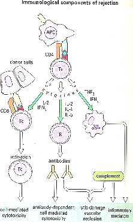

MECHANISMS INVOLVED IN GRAFT REJECTION
Rejection is a very complex process in which both cell-mediated immunity and circulating antibodies play a role; moreover, the relative contributions of these two mechanisms to rejection vary among grafts and are often reflected in the histologic features of the rejected organs.
Rejection has two overlapping phases: sensitization and graft damage.
The pivotal role in the sensitization process belongs to lymphocytes and dendritic cells of the graft itself. These elements (“passenger cells”) are able to express both class I and class II MHC molecules. They also possess the co-stimulatory molecules (e.g. B7). The presentation of the foreign MHC antigens may take place within the grafted organ (as depicted) or after the shed donor antigens are carried to the lymph nodes. As the host T cells travel to graft vessels (and some passenger cells travel backwards from the graft to regional lymph nodes), they get the possibility to meet each other. Graft APCs present graft epitopes to host CD4+ and CD8+ lymphocytes. The host and graft cells in this moment interact, in spite of their non-singeneic nature! This is similar to the mixed lymphocyte reaction that occurs in vitro. Of great importance is the identity of co-stimulatory adapters (B7 and such molecules) on the surface of graft passenger cells and host lymphocytes. Graft B7 and its analogues fit the host CD28 and CTLA-4 receptors. This prevents the host lymphocytes from apoptosis or getting tolerant towards graft. There is an idea to alter graft rejection, violating this aspect of cell interaction, which has been already tried in experimental animals.

Another result of chemoattractive cytokine action is local accumulation of mononuclear cells (lymphocytes and macrophages), as described previously. Non-specific damage induced by phagocytes, attracted by DTH mediators also contributes into rejection process. The delayed hypersensitivity with its attendant microvascular injury, producing thrombosis, coagulation, tissue ischemia, along with destruction mediated by accumulated macrophages is an important mechanism of graft destruction.
Earlier studies suggested no role for humoral antibody, as transplantation immunity could not be transferred by serum. It is now thought, however, that humoral responses are important in at least two types of rejection:
Preformed circulating antibodies occur in transplant recipient who have encountered the foreign antigen before transplantation. This may occur as a result of previous sensitization of a recipient by blood transfusions, by shed paternal antigens in course of previous pregnancies, or infections with HLA cross-reacting bacterial or viral surface antigens. The AB0 antigens of kidney graft may also play triggering role because of natural agglutinogens in recipients. In this circumstance, rejection occurs almost immediately after transplantation, owing to the fixation of circulating anti-donor antibody to the vascular bed of the graft. The anti-donor antibodies responsible for hyperacute rejection may be directed against HLA or bloodgroup antigens. The resulting reaction is characteristic for IC deposition in graft vessels, vasculitis and Arthus- like reaction in transplant. Additional damage is caused by complement fixation and target cell lysis. This combination of IC mediated and cytotoxic immediate hypersensitivity may cause the reaction, which is termed "hyperacute rejection" (within minutes or few hours). The death of transplant occurs as a result of wide spread arteritis and arteriolitis, leading to thrombi and ischemic necrosis. Fortunately, cross-matching of the donor's lymphocytes with the recipient's serum prior to transplantation has diminished the frequency of this dramatic complication.
In recipient not previously sensitized to transplantation antigens, exposure to the class I and class II MHC antigens of the donor also may evoke antibodies. The antibodies formed by the recipient may cause injury by several mechanisms, including complement-dependent cell-mediated cytolysis, and the deposition of antigen-antibody complexes. The initial target of antibodies in rejection appears to be the graft vasculature. The humoral component takes part in acute rejection (within several days or couple of weeks of transplantation, or suddenly – months or years after operation, than immunosuppression has been terminated). In any case, the very process of acute rejection occupies several days.
Antibody-dependent rejection phenomena are reflected histologically by a vasculitis, sometimes referred to as "rejection vasculitis". Vasculitis may be acute or subacute. Former is characterized by edema and thrombosis, later is particular for thickening of intima due to wall cell proliferation. Both bring in the disorder of graft blood supply.
The interaction of specific antibody with antigen initiates complement-dependent tissue injury and triggers other mediators of inflammation, namely platelet aggregation and release, and neutrophil lysosomal leakage as well as coagulation, fibrinolysis, and activation of the kinin cascade.
The cellular and the humoral rejection mechanisms are combined in different proportions. Histologically, humoral rejection is always associated with vasculitis, whereas cellular rejection is marked by an interstitial mononuclear cell infiltrate.
In superacute rejection antibody-mediated process is preponderant. In acute rejection both mechanisms are mixed. Acute cellular rejection is most commonly seen within the initial months after transplantation. Patients with predominantly cellular mechanism of acute rejection in absence of Ig-dependant arteritis respond better for immunosuppressive therapy. Acute humoral rejection is seen most commonly in the first few months after transplantation or when immunosuppressive therapy is discontinued. Such patients show immediate and persistent poor function of the graft and do not respond to high-dose immunosuppressive therapy.
Chronic rejection occurs if acute manifestation of process is suppressed by treatment, but process is not entirely stopped. It is characteristic for progressive loss of parenchymal elements in graft and their replacement for fibrosis. This is accompanied by progressive decrease of organ function. For example, in case of renal graft in may be manifested in progressing increase of serum creatinine level. The process (for kidney graft) usually occupies over 6 months. This is thought to be a result of chronic minor damages, caused by both cellular and humoral mechanisms. At least, there are fibrotic vasculitis, plasma cells, mononuclear infiltration and cumulated eosinophils within the graft.
NEXT CHAPTER OR